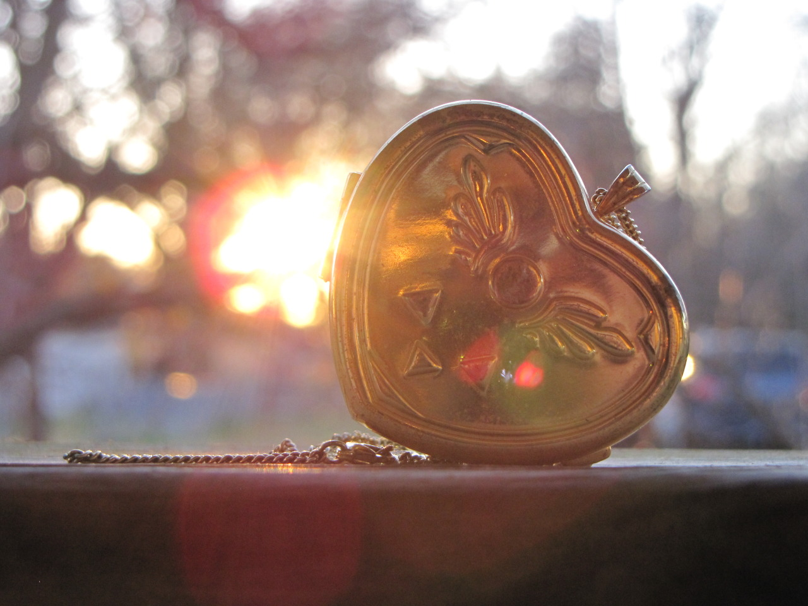
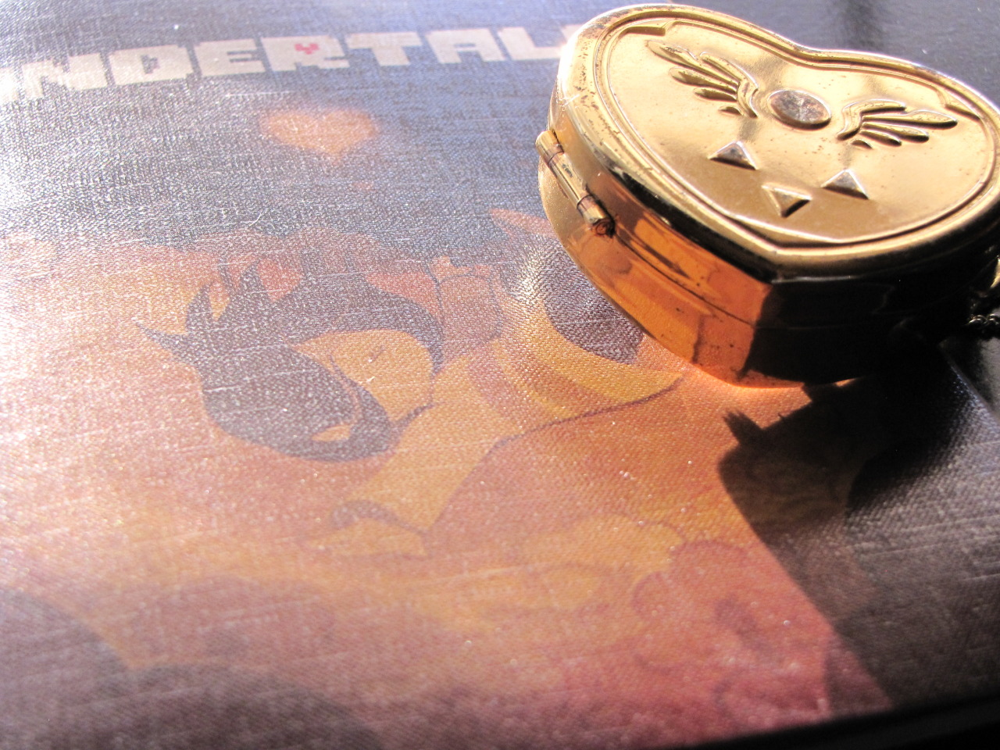
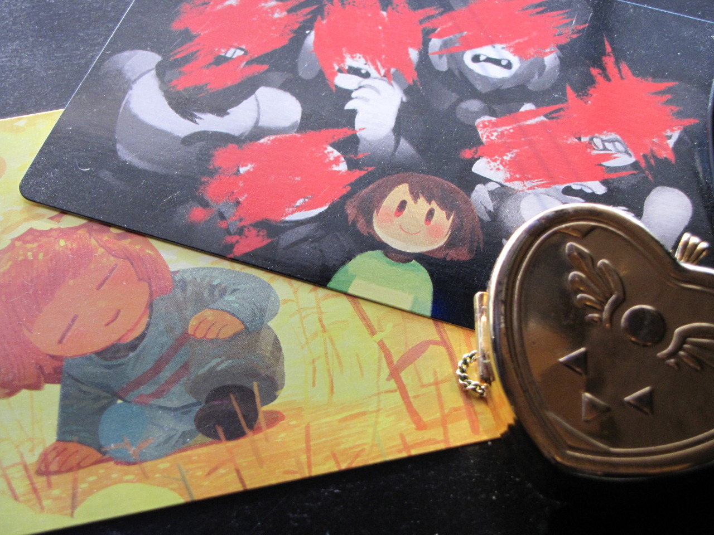

merch photos
  This is the source of one of the photos that appears on my homepage.
My Undertale Collector's Edition is not the most special thing to most people, after all, you could just buy your own on Fangamer if you wanted... but it really is invaluable to me. I got it during a time where I really needed it. Don't worry about the wear and tear on the locket. I have a second one that Fangamer sent me that sits in the Collector's Edition box, but this one is my personal locket. I keep it with me when I need it, mostly to therapy sessions nowadays. They were kind enough to send me the exclusive Chara postcard that originally was only given out through Flowey's Discount. Here's what it says on the back.
They were even kind enough to draw me a Flowey on the back of it.
I had a lot going on when I got these, so when I got the box and finally had the time to open it, I just cried and cried for a really long time over that card. I didn't ask for it or anything, they just gave it to me. I really was in a bad dream then. It still feels like some kind of divine intervention telling me not to kill myself. It's very very special to me. I used to position it so that Chara appeared through the heart on the opening of the Collector's box. It's embarrassing, but it gave me strength when I felt like I was going to die. So I'll keep all of this safe for forever. This isn't all of my Undertale merch by the way, but it's the photos that I have for right now.